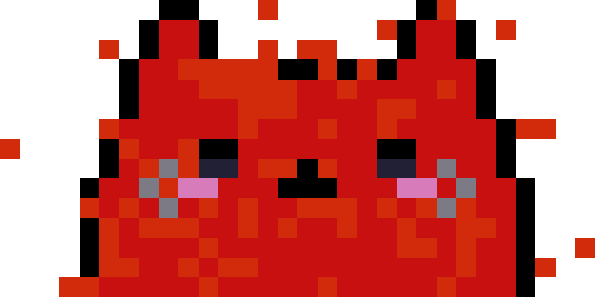

<!-- menu -->
<mat-toolbar color="primary" class="menu">
    <button mat-button a routerLink="../home"><h1>bllurryy.k</h1></button>
    <button mat-button a routerLink="../home">HOME</button>
    <button mat-button a routerLink="../projetos">PROJETOS</button>
    <button mat-button a routerLink="../about">SOBRE MIM</button>
    <button mat-button a routerLink="../home-redcat">RED CAT GAMES</button>
    <button mat-button a routerLink="../donate">DONATE</button>
    <button mat-button><mat-icon svgIcon="candy"></mat-icon></button>
</mat-toolbar>

<!-- header-projetos -->
<mat-toolbar class="card">
    <button mat-button><h1>Projetos (do mais recente ao mais antigo)</h1></button>
</mat-toolbar>

<mat-card class="card-menu" a routerLink='../projetos-amiic'>
    
    <mat-card-title>Amiic</mat-card-title>
    <mat-card-subtitle>Aplicativo mobile para controle de coleção amiibo.</mat-card-subtitle>
</mat-card>

<!-- header-games -->
<mat-toolbar class="card">
    <button mat-button><h1 class="text-icon">Games⠀</h1><mat-icon svgIcon="game_controller"></mat-icon></button>
</mat-toolbar>

<!-- cards -->
<mat-card class="card-menu" a routerLink="../home-redcat">
    
    <mat-card-title>Acessar Red Cat Games</mat-card-title>
    <mat-card-subtitle>WebPage dedicada a minha equipe de desenvolvimento de jogos, a Red Cat Games.</mat-card-subtitle>
</mat-card>

